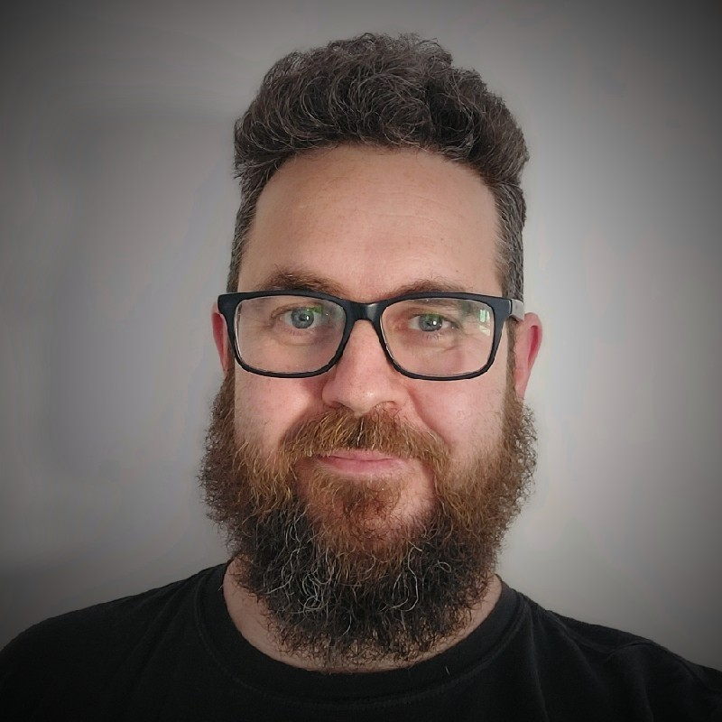

Currículum vitae
Publicado el .

JPEG · 800×800 px · 95 KB · material propio de Christian Comes · licencia: todos los derechos reservados.
Técnico IT L2 con más de 8 años de experiencia en soporte a entornos de gran escala — incluyendo administración pública (GVA, +20.000 usuarios), sector del automóvil (Ford, implantación HoloLens 2) y corporativo. Gestión de incidencias en Active Directory, Jira, y Confluence. Documentación técnica de referencia como parte del flujo de trabajo habitual, no como tarea adicional. Disponible para rol L2/L3 o Sysadmin, híbrido o remoto.
Ubicación: Valencia
Si te gusta lo que ves aquí, no dudes en contactarme, me encanta el café.
Descargar CV en español (PDF) · Download CV in English (PDF)
Experiencia
Proyecto DGTIC Generalitat Valenciana — Técnico IT L2
–Actualidad
- Técnico de incidencias IT L2 en remoto
- Diagnóstico y resolución general de problemas informáticos
- Soporte a más de 20.000 usuarios
- Apoyo a nuevos miembros del equipo durante sus primeros meses
Electrónica Saltó — Técnico IT de campo
- Técnico del programa de renovación de PCs de la sanidad pública
- Servicios de montaje y desmontaje de equipos
- Responsable del vehículo de empresa y del inventario informático
Ford Motor Company — Técnico IT de campo, Almussafes
- Técnico del programa de implantación de Microsoft Hololens 2
- Enlace técnico del programa de renovación de PCs
- Control de inventario de PCs y actualización de base de datos
- Técnico de telefonía fija y móvil
- Técnico de impresoras in situ
Marktel — Helpdesk IT L1, Xirivella
–
- Técnico L1 de proveedor de red
- Diagnóstico y reparación remota de problemas de red
Habilidades
Entorno de trabajo
Trabajo en equipo e individual al mismo nivel. Acostumbrado a seguir los protocolos de ITIL 4 Foundation.
Técnicas
Cómodo en entornos Windows y Linux. Administración de servidores con Proxmox — contenedores LXC, máquinas virtuales y Docker. Herramientas de soporte remoto, ticketing con Jira, documentación con Confluence y resolución de problemas de red. Si hay algo que no sé hacer, lo aprendo.
Educación
Università degli Studi di Genova
Génova, Italia — Máster en Traducción e Interpretación
Universidad de Granada
Granada, España — Grado en Traducción e Interpretación
IES Tirant Lo Blanch
Gandía, España — FP Superior: Desarrollo de productos electrónicos de consumo
IES Tirant Lo Blanch
Gandía, España — FP: Técnico en equipos electrónicos de consumo
Aficiones
Videojuegos, trastear con hardware, acampada, pasar tiempo con mi perro, tomar algo con amigos y familia.
Referencias
Disponibles a demanda.